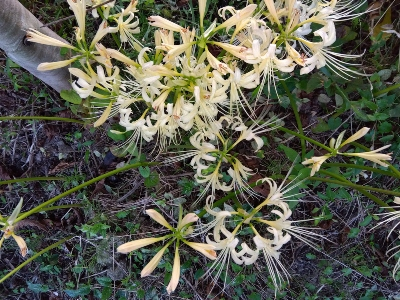

リコリスが咲きだしました。もううぐ彼岸だな。
更新日 : 2026/09/17

彼岸とかシルバーウィークはまだ先な気分でいましたが、リコリス咲いてるの見たらもうそんな時期なんだって実感しました。
リコリス見ると毎年同じことを思うんですよね。
急いで秋野菜、冬野菜の準備や草刈りしないといけないな。
更新日 : 2026/09/17

彼岸とかシルバーウィークはまだ先な気分でいましたが、リコリス咲いてるの見たらもうそんな時期なんだって実感しました。
リコリス見ると毎年同じことを思うんですよね。
急いで秋野菜、冬野菜の準備や草刈りしないといけないな。
炒りピーナッツを作るのはちょっと面倒。